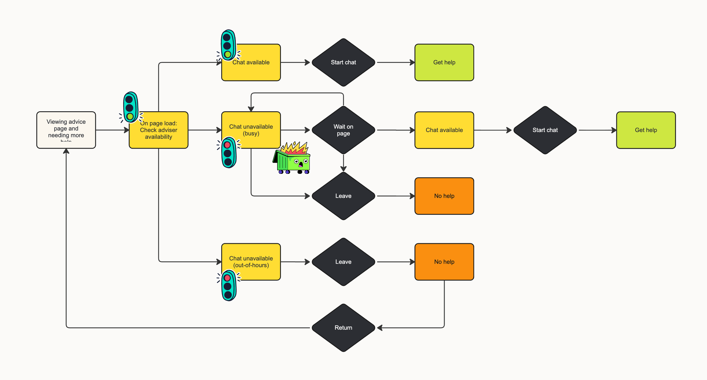
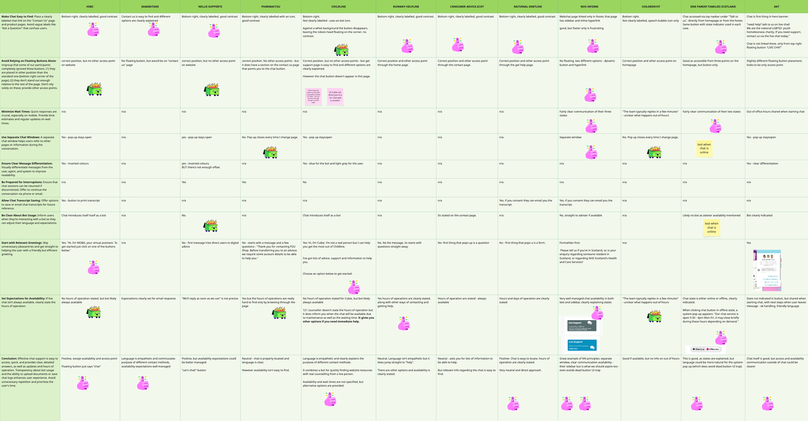
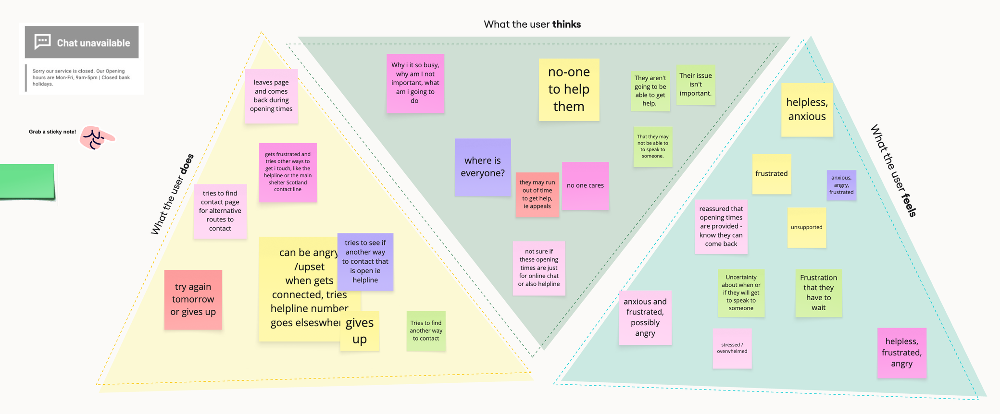
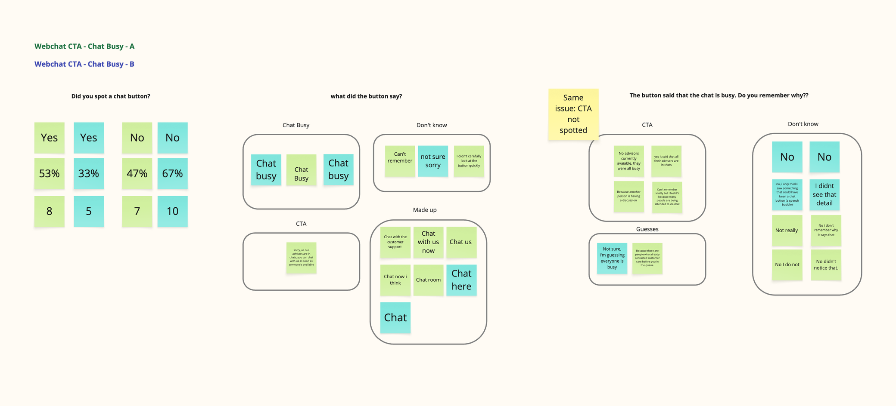
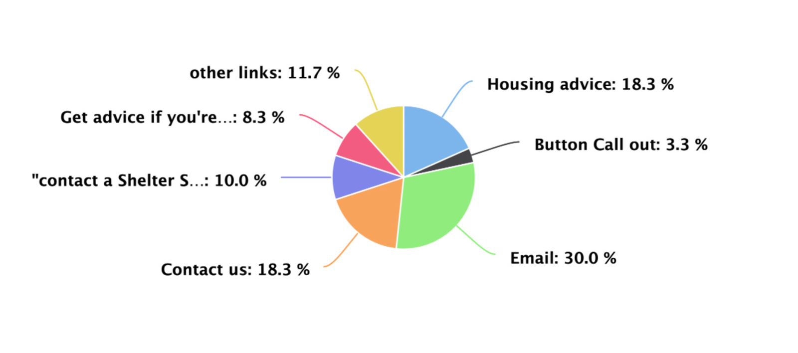
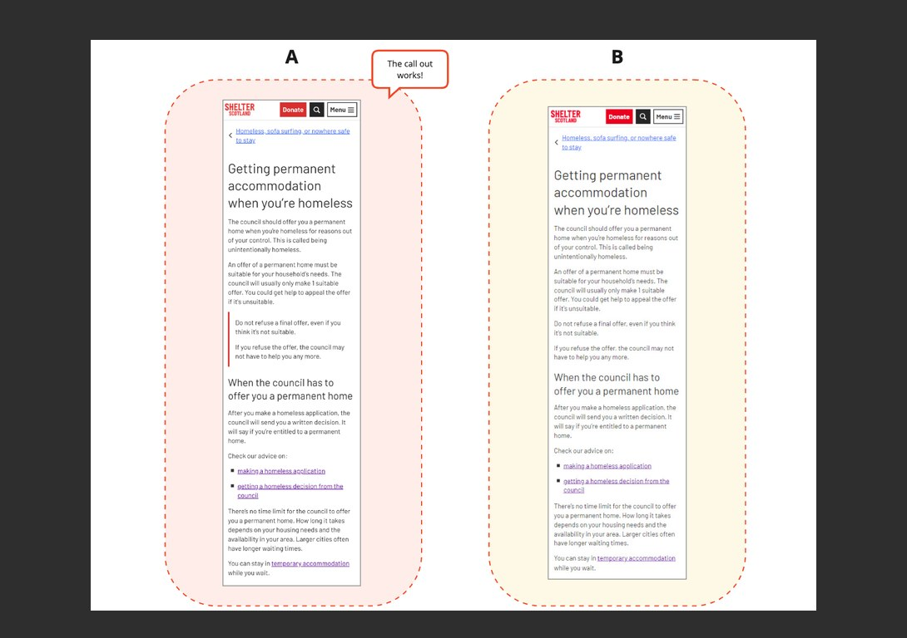

Webchat CTA research
Overview
Shelter Scotland was implementing a new webchat experience, but the call-to-action solution developed for Shelter England could not be directly reused due to differences in platform structure and chat availability.
Unlike England, where chat was limited to emergency and triage journeys, Shelter Scotland’s chat feature appeared across all advice pages within a narrower sidebar layout. At the same time, limited advisor availability meant that most users would encounter either a “chat busy” or “chat unavailable” state.
The project focused on understanding how CTA messaging could better manage user expectations, reduce frustration, and guide users toward alternative support pathways when chat was unavailable.
I worked closely with the lead UX researcher throughout the project and was involved across the full research process, including workshop activities, synthesis, testing, analysis, and recommendation development.
The problem
Previous feedback showed that users were already frustrated by the limited availability of Shelter Scotland’s webchat service.
When chat was unavailable or busy, users were often left without clear guidance on what to do next. This created uncertainty during high-stress situations, particularly for users urgently seeking housing advice.
We suspected the existing experience created a negative cycle:
- Users attempted to access chat support
- Chat appeared unavailable or busy
- Users lacked clarity around wait times or alternatives
- Frustration increased, leading to drop-off and negative perceptions of the service

Research approach
This project combined competitor analysis, collaborative workshops, and user testing to evaluate how different CTA approaches affected user understanding and emotional response.
Competitor analysis
We reviewed a range of customer-service chat experiences alongside NNGroup guidance on chat design patterns. The analysis highlighted several recurring best practices:
- Clear visibility of chat availability
- Transparent wait expectations
- Empathetic communication
- Alternative support pathways when chat was unavailable
This helped establish a benchmark for evaluating Shelter Scotland’s existing experience.

Advisor workshop
We ran a collaborative workshop with Shelter advisors to better understand user frustrations and generate CTA ideas for different chat states. The workshop included:
- Empathy mapping exercises
- CTA brainstorming sessions
- Collaborative prioritisation and refinement
The discussions revealed strong emotional reactions tied to unavailable chat states.

When chat was closed, users often felt abandoned or unsupported. During busy periods, frustration increased due to uncertainty around wait times and lack of queue visibility.
Participants also highlighted how users arrived with expectations shaped by other chat services and Shelter Scotland’s reputation as a support organisation.
Two opportunities emerged consistently:
- Set expectations more clearly
- Provide clearer alternative pathways when chat was unavailable
User testing
We used Lyssna to test CTA visibility, clarity, and emotional response across multiple chat states. The research focused on:
- Visibility of CTA messaging
- User understanding of chat availability
- Emotional reactions to busy or unavailable states
- User behaviour when chat support was inaccessible
- Preference testing for CTA wording and tone
Chat closed
Task 1: A/B testing. We conducted an A/B test with 30 participants. Half viewed Option A, and the other half viewed Option B for 20 seconds. Participants were then asked about the button’s visibility and the clarity of the CTA.
Task 2: Design survey. Participants were shown two CTAs and asked to choose their preferred design.
- Option A: Chat is open Monday to Friday, 9am to 4pm. We're closed on bank holidays.
- Option B: Chat is open weekdays, 9am to 4pm. We're closed on bank holidays.
Chat busy
Task 1: A/B testing. We conducted an A/B test with 30 participants. Half viewed Option A, and the other half viewed Option B for 20 seconds. Participants were then asked about the button’s visibility and the clarity of the CTA.
Task 2: Design survey. Participants were shown the chat busy state and asked how it made them feel.
Task 3: Design survey. Participants compared two CTA designs and chose their preferred option.
- Option A: “Sorry, all our advisers are in chats. You can chat with us as soon as someone's available.”
- Option B: “All our advisers are in chats right now. You can chat with us as soon as someone's available.”
Both button states
Task 4: First click test. This task involved all 60 participants from all tests, who were shown the same page and asked what they would do if the chat was unavailable.
Key findings
CTA not visible enough
Across both “chat closed” and “chat busy” states, many participants struggled to notice or recall the CTA messaging.
Roughly half of participants could locate the button, but significantly fewer could remember the copy itself or identify important details such as opening hours. This suggested the issue was less about wording and more about visual hierarchy and prominence.
The findings indicated a need to explore:
- Stronger visual emphasis
- Improved hierarchy
- More integrated messaging within the CTA itself

Users prioritised human support over navigation pathways
When asked what they would do if chat was unavailable, many participants selected pathways that implied direct human contact.
The email option received the highest number of clicks, despite not functioning as a direct advice channel. Participants often assumed it would connect them to someone who could help. This behaviour reinforced how strongly users sought reassurance and human support during stressful situations.
The test also uncovered misleading pathways, including a “Contact Shelter Scotland Adviser” link that led users to a dead-end experience.

These findings highlighted the importance of:
- Clear expectation setting
- Avoiding misleading labels
- Providing actionable next steps during unavailable states
Users responded emotionally to unavailable chat states
The “chat busy” state generated particularly strong emotional reactions. Many participants described feelings of:
- Frustration
- Disappointment
- Anxiety
- Uncertainty
Several users expected features commonly found in other chat systems, such as queue visibility or estimated wait times. Without these signals, users questioned the reliability of the service and often considered leaving the experience altogether.
The remaining participants exhibited neutral or positive reactions, with a few understanding the situation and responding empathetically.
Tone influenced trust and perception
We tested multiple CTA wording variations to understand how tone affected user perception. For chat availability messaging, participants strongly preferred explicit phrasing such as “Monday to Friday” over shorter alternatives like “Weekdays”, because it felt clearer and more direct.
We also tested two “chat busy” CTA variants: one with an apology, and one with a more neutral tone. Although many users appreciated the empathy of the apologetic version, others perceived it as less professional.
The final recommendation balanced both perspectives by shifting the language toward reassurance and transparency:
“All our advisers are helping others right now. You can chat with us as soon as someone’s available.”
Outcome
The research informed updated CTA copy and interaction guidance for Shelter Scotland’s new webchat experience. The project helped establish clearer principles around:
- Managing expectations during unavailable states
- Communicating service limitations transparently
- Reducing frustration through clearer pathways and messaging
- Supporting users emotionally during high-stress interactions
The findings also exposed broader usability issues beyond the CTA itself, including misleading navigation pathways and gaps in onward support journeys.
Reflection
One of the most valuable insights from this project was recognising how emotionally charged support journeys become when users are unable to access help.
The research also reinforced how small wording decisions can significantly affect user perception. Tone, clarity, and transparency all shaped whether users interpreted the experience as supportive or dismissive.
This project strengthened my understanding of designing for emotionally vulnerable users and highlighted the importance of combining usability research with empathetic content design.
Other projects
Callout component review | Shelter Scotland
Turning inconsistent callout usage into evidence-based guidelines for the advice team.
Read case study